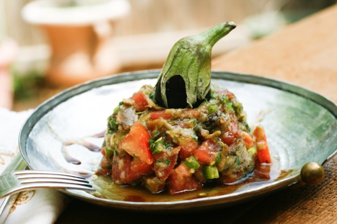

Monk Salad

- 1 kilo eggplant
- one bunch of flat parsley or other herb
- one bunch of green onions or one small white or red onion
- 4 tomatoes
- finely chopped flat parsley
- 1 green pepper
- 3 cloves smashed garlic
- olive oil as needed
- juice of 2 or 3 lemons
- 1 T pomegranate molasses
- salt and pepper to taste
step 1
Peel and cut the eggplant into slices and sprinkle with salt. Set aside in a collander until it spits out all
brownish liquid.
step 2
Dice the remaining vegetables and mince the parsley. Transfer the garlic to a bowl and prepare the dressing
with lemon juice, olive oil and pomegranate molasses, and mix with a small whisk or fork.
step 3
Wipe the eggplant slices dry and sprinkle with olive oil and bake in a 180 C degree oven for 30 minutes
or grill until soft. Chop the eggplant into dice and transfer to the salad bowl.
step 4
Add the dressing to the salad bowl and combine all the ingredients, taste and adjust seasoning if needed and
serve.